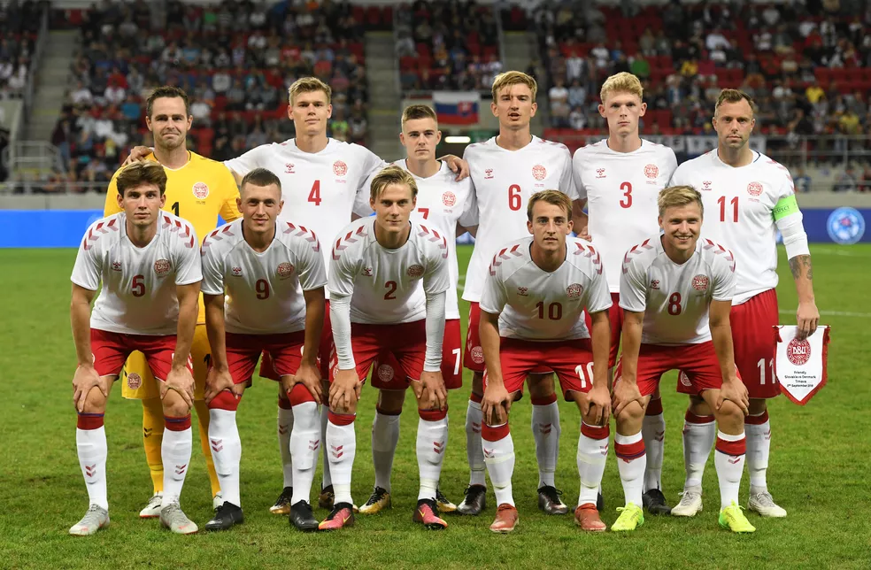

COPAS QUE JÁ PARTICIPOU:
A Dinamarca já participou de cinco edições da Copa do Mundo. O melhor resultado foi a chegada às quartas de final em 1998.

PREMIAÇÕES QUE JÁ ALCANÇOU
Não obteve títulos em Copa do Mundo.
NOME DO TÉCNICO:
Kasper Hjulmand
PRINCIPAIS JOGADORES
Dolberg
Cornelius
Braithwaite
Tabela de jogos
| Data/Hora | Estádio | Adversário |
|---|---|---|
| 22 nov 2022 / 16h00 | Estádio da Cidade da Educação | Tunísia |
| 26 nov 2022 / 19h00 | Estádio 974 (Estádio Ras Abu Aboud) | França |
| 30 nov 2022 / 18h00 | --- | AFC–CONMEBOL |